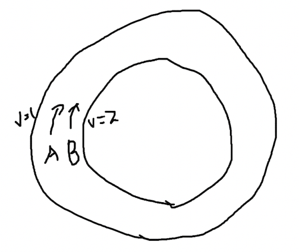
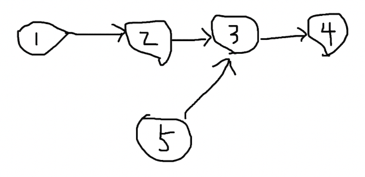
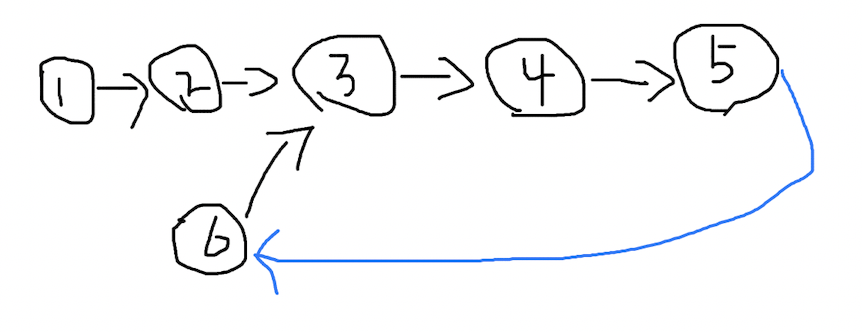

链表常见算法题及解析
目录：
翻转链表
问题
对于一个这样的链表：
希望经过函数处理后，变成这样：

链表结构定义
节点的定义为：
type Node struct {
Value int
Next *Node
}
构造链表方法为：
func createLinkedList(n int) *Node {
head := &Node{Value: 0}
node := head
for i := 0; i < n; i++ {
if i < n {
node.Next = &Node{Value: i + 1}
}
node = node.Next
}
return head
}
函数会返回一个链表的指针。使用指针而不是结构体类型是因为，Go 语言的某些关于变量的设计，无法使用 Node{} == nil 的形式判断变量是否为空，因为理论上 Node{} 不是 nil。这就造成了如果使用Node{}作为链表头部的变量类型，在遍历的时候找不到一个合理的结束时机，只能使用类似 Node{}.Next == nil 这样的形式，还会遗漏掉最后一个节点。
迭代翻转链表
这里不能使用直接改变节点值的方式，比如遍历一次后把链表节点的值按照顺序储存到数组中，然后再遍历一次，一次修改链表节点的值。这个违背了数据结构的意义。可以使用递归完成翻转链表的操作。

比如第一个节点，使用 temp 变量储存翻转前的下一个节点的位置，然后把 head.Next 指向翻转后应该有的节点位置，第一个节点的下一个节点是空节点，第二个节点的下一个节点是节点 1。完成 head.Next 的指向后，head 要指向 temp 也就是原来的下一个节点用以完成遍历。这时还需要要用一个 curr 变量来储存head 跳转前的位置，方便下一次 head.Next 指向上一个节点的位置。这应该是一个简单的过程。
func reverseLinkedList(head *Node) *Node {
curr := new(Node)
for head != nil {
temp := head.Next
head.Next = curr
curr = head
head = temp
}
return curr
}
- 时间复杂度：O(n)
- 空间复杂度：O(1)
执行
执行程序后结果和预期一致：
func main() {
head := createLinkedList(4)
head = reverseLinkedList(head)
for head != nil {
fmt.Println(head.Value)
head = head.Next
}
}
判断链表是否有环
问题
链表有环是指链表中“最后”的一个节点，它的下一个节点指向了链表中位于它之前的节点。

当程序遍历这个链表，会发现进入了死循环，永远找不到出口了。怎么判断一个链表，是否存在这样的环呢？
分析
常用的解决思路是双指针。设想一个在赛道上的场景，两个人 A 和 B 处于同样的起点，但是他们跑步的速度并不相同，A 的速度 v1=1，B 的速度 v2=2，也就是 B 比 A 快。在这样的情况下，只要他们不停，B 一定会超过 A 一圈然后再次追上 A，这是一种生活中的常识。
在一个圈里，一快一慢的两个点一定会再次相遇，而且他们经过的路程是可以计算的，路程 s1 和 s2 应该满足这样的关系：
s2 - s1 = nR
R 是圆圈的周长，n 是正整数，他们位于出发点时 n=0，第一次相遇的时候 B 比 A 多跑了一圈，多出了 1 倍周长的路程，n=1。
和链表的情景相比较，赛道的场景还少了开始的一段距离，在进入赛道之前，A 和 B 会先从赛道外的小路进入赛道，然后再开始绕圈跑步。他们的起点在赛道外，为了便于计算，他们的速度从始至终不发生变化，那么当他们进入赛道之后，就已经不是同样的起点了。
在这种情况下，他们经过的路程 s1 和 s2 还有规律可循吗？设圆形赛道外的直道距离为 d，相比上面的关系式，他们在圆圈内的路径依然满足 n 倍的周长 R，只不过现在的表达式不同了：
(s2 - d) - (s1 - d) = nR
s2 - d - s1 + d = nR
s2 - s1 = nR
结果表达式在相互抵消路径 d 之后，和之前的一样。
A 的路程 s1=v1t，B的路程 s2=v2t，时间 t 是一样的，速度 v1 和 v2 是已知的 1 和 2，有：
s2 - s1 = nR
v2t - v1t = nR
2t - t = nR
t = nR
取 n = 1，t = R。
解决
回到链表的问题，其实我们只要用快慢指针就可以判断链表是否有环了，并不需要知道他们具体相遇的点在哪儿，不过计算路径关系的公式可以辅助我们验证结果的正确性。
回到这个链表，用两个指针 A 和 B 从节点 1 分别以速度 1 和 2 出发：
他们的位置关系将会是：
| 时间 t | 0 | 1 | 2 | 3 | 4 |
|---|---|---|---|---|---|
| A 的位置 | 节点 1 | 节点 2 | 节点 3 | 节点 4 | 节点 5 |
| B 的位置 | 节点 1 | 节点 3 | 节点 5 | 节点 3 | 节点 5 |
在第 4 个时间点的时候，A 和 B 相遇了，环的周长正好等于 4，满足 t = R 的关系。
链表如果有环，找到环的起点
问题
这个问题是上一个问题的延伸，在判断链表已经有环的基础上，找到环的起点。比如这样的一个链表，环的起点是节点 3。

分析
（1）
在判断链表是否有环的问题中，我们得到了一个至关重要的结论：
t = R
两个快慢指针将会在等于环长度的时间点相遇。对于上图的链表，快慢指针的位置关系是这样：
| 时间 t | 0 | 1 | 2 | 3 | 4 | 5 | 6 |
|---|---|---|---|---|---|---|---|
| A 的位置 | 节点 1 | 节点 2 | 节点 3 | 节点 4 | 节点 5 | 节点 6 | 节点 7 |
| B 的位置 | 节点 1 | 节点 3 | 节点 5 | 节点 7 | 节点 3 | 节点 5 | 节点 7 |
我们可以观察到，环的长度是 6，快慢指针也会在第 6 秒相遇，他们交点位置是节点 7:

（2）
根据上面提到的之前的结论，按照慢指针 v1 = 1 的速度，它经过的路程和时间是一样的，也就是说，从出发点到两指针相遇的路径长度，根据 t = R，此刻的时间是 t，正好是环的长度 R：
（3）
做一个假设，慢指针保持着这个长度为 R 的走过的路径，向前移动一步，会变成这样：

再走一步，变成了这样：

（4）
到这里似乎还不知道我们要干什么。现在对路径设一个变量，从 出发点 到 环的起点 之间的距离设为 l1，整个链表的长度设为 l，环的长度仍然为 R。

这 3 个变量将满足这样的关系：
l - l1 = R
这是太显而易见的事情。
（5）
记得我们一开始的结论吗？从 出发点 到 快慢指针的交点 之间的距离，等于环的长度 R：
变量 l 和 l1 保持不变，图就成了这样：

此时的 l 仍然等于 l1 + R，不同的是，l1 和 R 重合了。
（6）
l - l1 = R
重合之后，等式关系还成立吗？当然成立，因为整个链表没有变，变量的大小没有变。但好像又觉得哪里奇怪。
现在新设一个变量，设从 快慢指针的交点 到 环的起点 的距离为 l2：

此时：
l - l2 = R
（7）
经过这样一些比较，发现 l1 == l2，也就是从 出发点 到 环的起点 的距离，等于 快慢指针的交点 到 环的起点 的距离。
解决
出发点 -> 环的起点 == 快慢指针的交点 -> 环的起点
这是一个很重要的结论，因为我们此时的快慢指针就在 快慢指针的交点 上，在节点 7 的位置。
如果这个时候在新增一个指针 p3，在快慢指针相交的时刻，从整个链表的 出发点 1 出发（速度为 1），那么 p3 和慢指针一定会相交，因为 p3 到 环的起点 的距离等于慢指针到 环的起点 的距离。p3 遇到慢指针的位置，就是环的起点。

判断两个链表是否相交
问题
存在两个链表，分别在某一个节点指向了同一个节点作为下个节点：
这里有两个链表：
1 -> 2 -> 3 -> 4
5 -> 3 -> 4
怎么判断两个链表是否相交？
分析
一种简单的做法是，分别遍历每条链表到最后一个节点，判断最后一个节点是否相同。如果两个链表在中间节点相交，则最后一个节点一定相同。
链表如果相交，找到交点
问题
对于这样两个链表：


如何找到第一个交点 3 ？
分析
一种简单的解决思路是，把这个链表的尾节点和任意一个链表的头节点连起来：
可以是链表 1 的尾节点到链表 2 的头节点，或者链表 2 的尾节点到链表 2 的头节点，总之连起来以后，问题就转变成了，找到链表环的起点。
合并两个有序链表
问题

给出两个有序链表，将两个链表合并为一个有序链表。
分析
思路暴力简单，同时迭代两个链表，按照顺序依次合并就可以了。控制好边界条件。


代码
node 结构定义：
type Node struct {
Value int
Next *Node
}
构建两条链表：
func main() {
root1 := &Node{
Value: 1,
}
root1.Next = &Node{
Value: 1,
}
root1.Next.Next = &Node{
Value: 3,
}
root1.Next.Next.Next = &Node{
Value: 5,
}
root2 := &Node{
Value: 1,
}
root2.Next = &Node{
Value: 2,
}
root2.Next.Next = &Node{
Value: 4,
}
root := merge(root1, root2)
for root != nil {
fmt.Println(root.Value)
root = root.Next
}
}
合并链表：
func merge(root1 *Node, root2 *Node) *Node {
var root *Node
var temp *Node
if root1.Value <= root2.Value {
root = root1
temp = root2
} else {
root = root2
temp = root1
}
p1 := root
p2 := p1.Next
for {
if p2 == nil || temp == nil {
break
}
if p2.Value <= temp.Value {
p1.Next = p2
p1 = p1.Next
p2 = p2.Next
} else {
p1.Next = temp
p1 = p1.Next
temp = temp.Next
}
}
return root
}